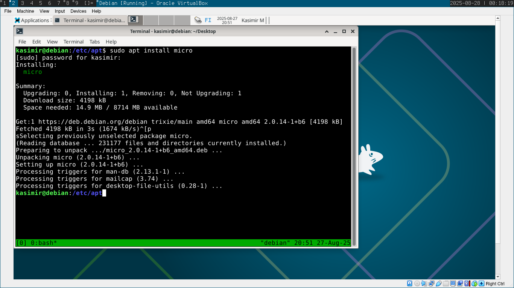
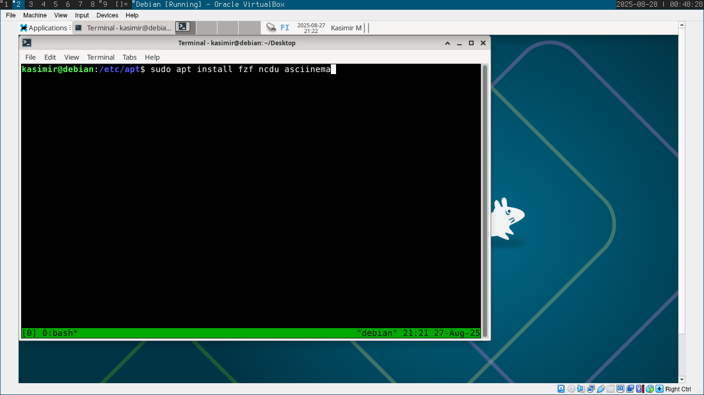
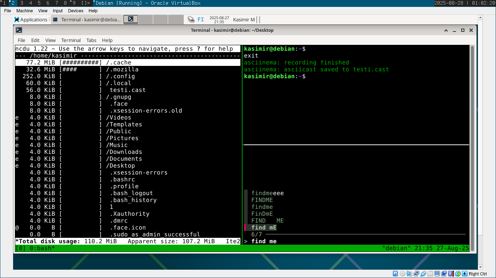
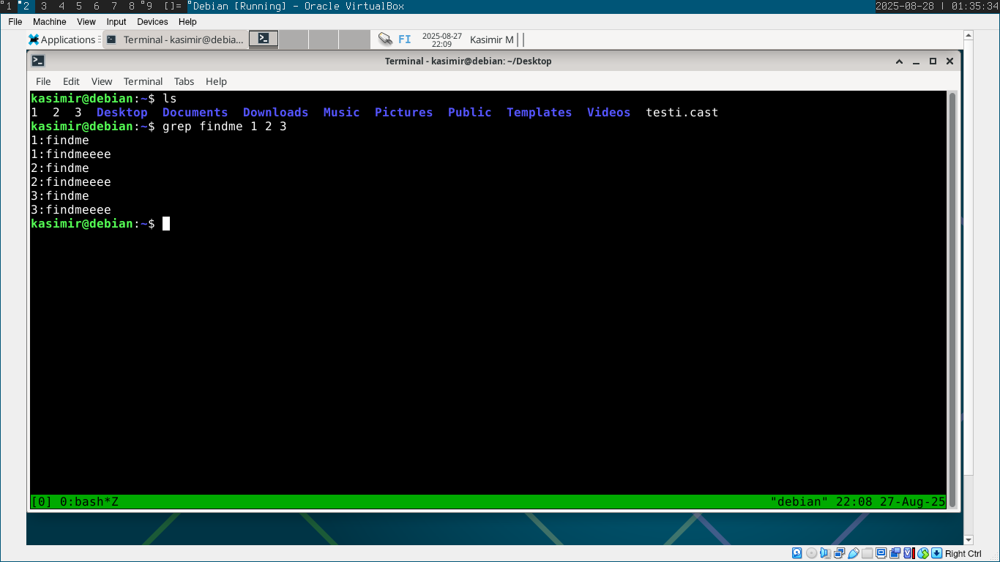
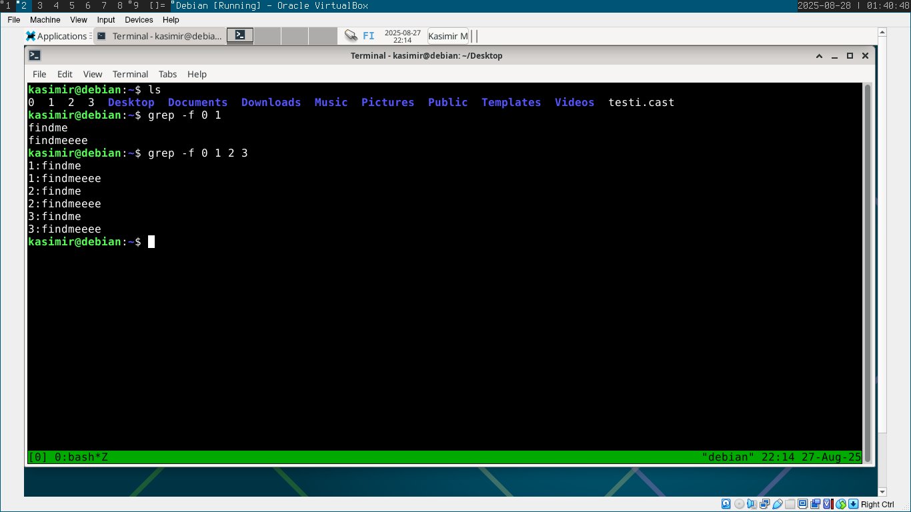
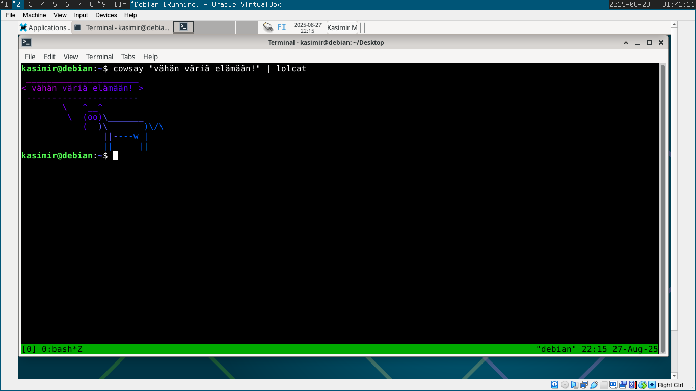
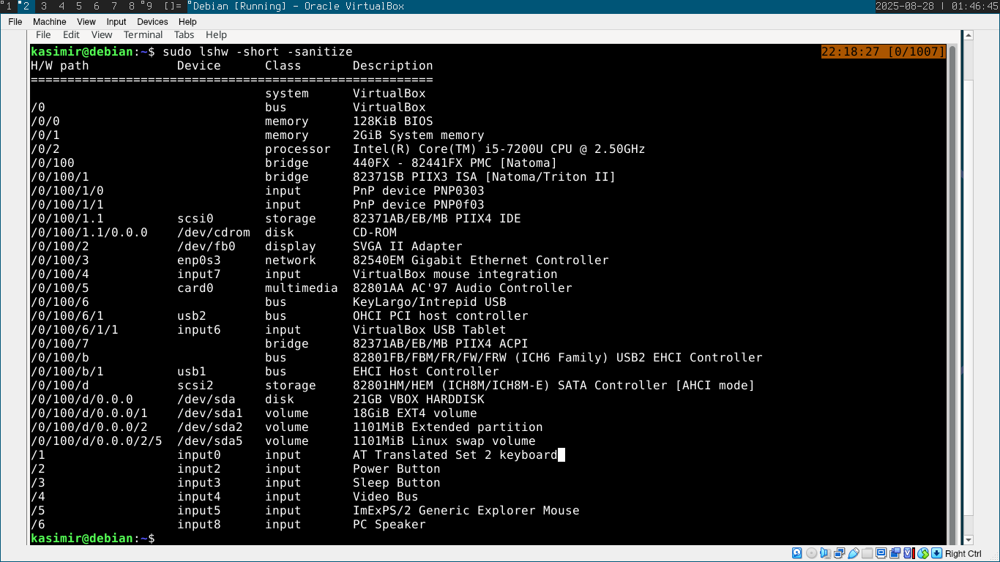

Komentolinjan perusteet:
Tärkeitä komentoja
- man - avaa ohjelman manuaalitiedoston
- pwd - kertoo nykyisen hakemiston sijainnin
- cd - vaihtaa hakemistoa
- ls - listaa hakemistossa olevat tiedostot
- less, more, cat - käteviä mm. tiedostojen sisällön tutkimisessa.
- touch - luo tyhjän tiedoston
- rm - poistaa tiedoston (rm -r voi poistaa hakemiston ja sen koko sisällön)
- mkdir - luo hakemiston
- rmdir - poistaa hakemiston
- cp - kopioi tiedoston
- mv - siirtää tiedoston
- ssh - etäyhteys toiseen koneeseen
apt -testailua
Asennettiin micro -editori komennolla
sudo apt install micro
Asennettiin vielä kolme itselleni uutta/uudehkoa komentoriviohjelmaa komennolla:
sudo apt install fzf ncdu asciinema
Testailin hieman näitä komentoja. Kivaa oli.
Hakemistojen esittelyä
root-hakemistossa ( / ) sijaitsevat kaikki tiedostot. Sen alaisuudessa on esimerkiksi tärkeä /dev -hakemisto jossa laitteisiin liittyvät tiedostot sijaitsevat.
home -hakemistossa ( /home ) sijaitsevat eri käyttäjien kotihakemistot.
Esimerkiksi /home/kasimir -hakemistossa sijaitsee .config -hakemisto, jossa ovat käyttäjän konfigurointitiedostot.
Hakemistossa /etc sijaitsevat järjestelmän laajuiset konfigurointitiedostot. Esimerkiksi /etc/vim -hakemistossa on vim-tekstieditoriin liittyviä konfigurointitiedostoja.
/media -hakemistossa tulee tiedostoja näkyviin jos koneeseen liitetään vaikkapa muistitikku (tämä tosin riippuu siitä miten järjestelmä on konfiguroitu.)
/var/log -hakemistossa on lokitiedostoja. Sieltä voi tutkia tietoa jos tulee ongelmia
grep
grepillä voi etsiä useammasta tiedostosta yhdellä kertaa tietoa:
grep findme 1 2 3
grepille voi syöttää myös haettavan asian tiedostosta. Tässä esimerkissä tiedostossa 0 on etsittävä asia, kun taas tiedostosta 1 etsitään:
grep -f 0 1
Esimerkki putkista
cowsay "vähän väriä elämään!" | lolcat
Raudan analysointia
Koska kyse on virtuaalikoneesta, rauta on emuloitua.
Lähteet:
https://terokarvinen.com/2020/command-line-basics-revisited/
https://www.golinuxcloud.com/grep-command-in-linux/